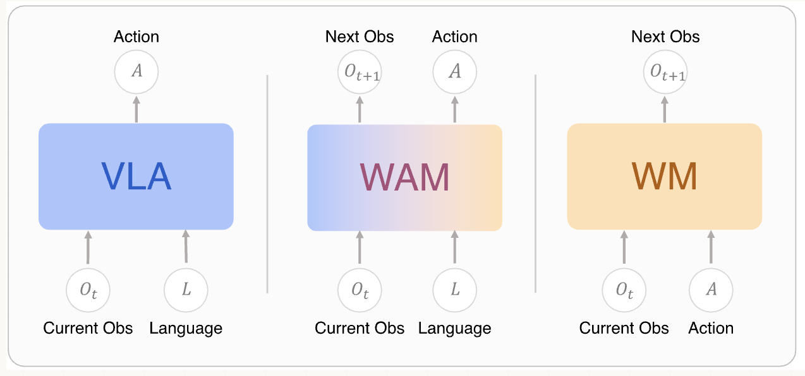
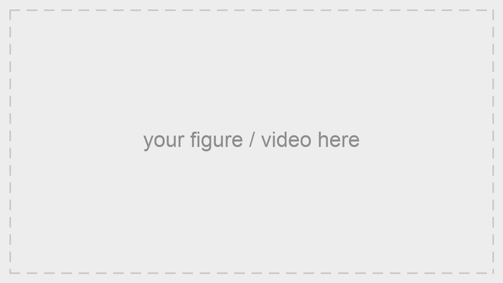

Conceptual definition and comparison of VLA, WM, and WAM. Figure from Awesome-WAM.

An overview of the pipeline. Describe each stage of your method here.
Describe the comparison against baselines and point out where VALERANT does better.
Describe the additional results or the dataset shown below.
If you find our work helpful, please consider citing us:
@article{qiao2026valerant,
title={VALERANT: An Automatic Navigable Game Map Generator via Action-Conditioned World Model Exploration},
author={Qiao, Yiran and Wang, Feng and Ma, Jing},
journal={arXiv preprint arXiv:XXXX.XXXXX},
year={2026}
}